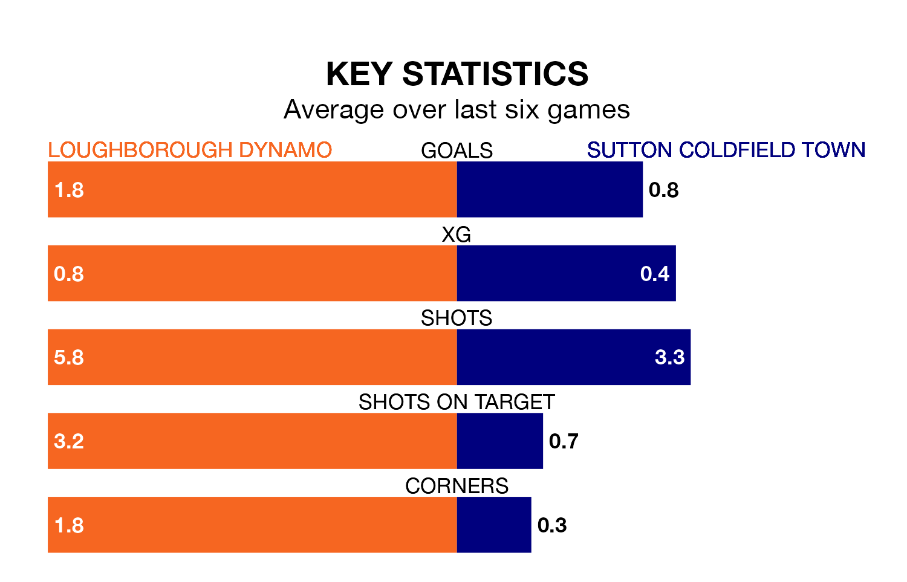

Loughborough Dynamo host Sutton Coldfield Town at the Nanpantan Sports Ground on Saturday on the back of three consecutive wins in the Northern Premier League Division One Midlands.
Loughborough Dynamo have picked up 12 points from their last six games, and they face a Sutton Coldfield side who have lost their last two matches, and collected five points from the last possible 18.
With 50 goals in 26 games so far this season, Loughborough Dynamo are scoring more than average in the league with 1.9 goals per game. And they are conceding fewer than average, letting in 33 goals at a rate of 1.3 per game.
Sutton Coldfield, meanwhile, are average scorers, with 1.5 goals per game. They have conceded 1.4 goals per game.
The home team are fourth in the table after 26 games, of which they have won 16 and drawn five, earning 53 points.
Town are six places behind Loughborough Dynamo in 10th, with 10 wins and six draws putting them on 36 points.
In the last five years, Loughborough Dynamo and Sutton Coldfield have played each other on five occasions. Loughborough Dynamo won three of them and they drew twice.
On average, Loughborough Dynamo scored 2.0 goals and Sutton Coldfield 1.2 in those matches.
Their last meeting was on September 30, when Loughborough Dynamo won 2-0 away.
Loughborough Dynamo's last match was on February 10, a 4-1 win against Gresley.
Sutton Coldfield lost 1-0 against Lye Town last time out, on February 3.
Updated: 12:06 (UTC), 15/02/24